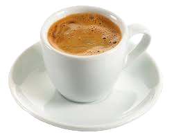

Nós servimos o café mais rico da cidade.

O café perfeito para você

Americano
Café suave e mais leve, preparado com uma dose de expresso diluída em água quente. Ideal para quem prefere um sabor mais suave.

Expresso
Intenso e encorpado, o expresso é a base clássica do café italiano. Servido em dose única, é forte e cheio de sabor.

Cappuccino
Combinação equilibrada de expresso, leite vaporizado e espuma cremosa. Finalizado com um toque de cacau ou canela, é perfeito para momentos relaxantes.